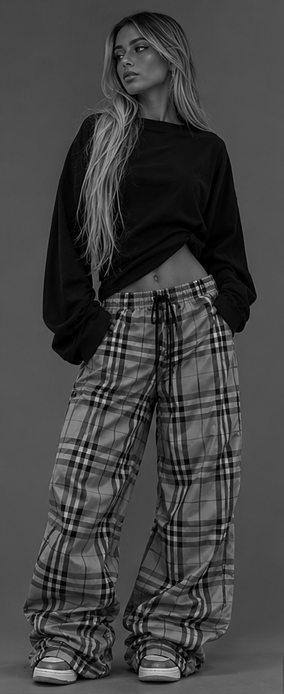
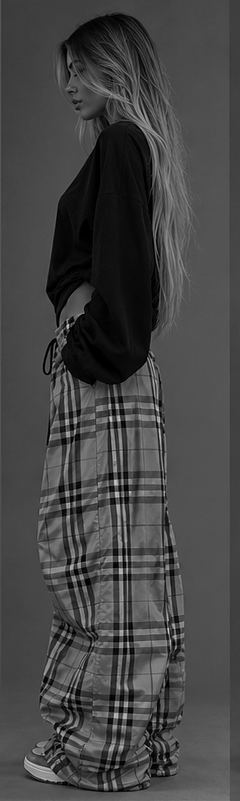
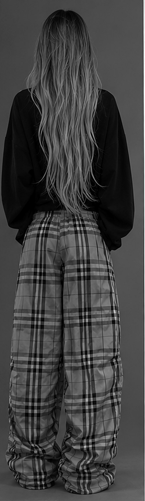
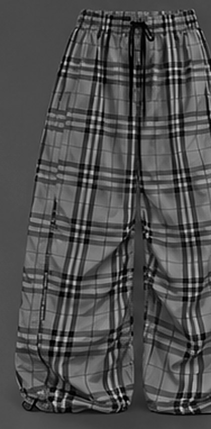
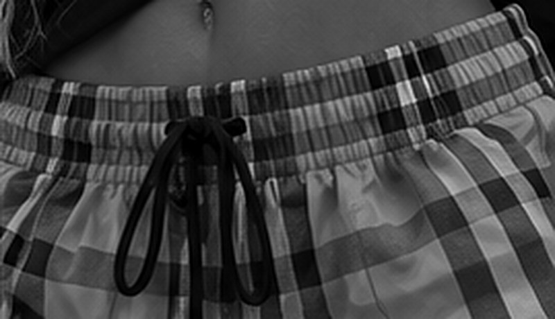
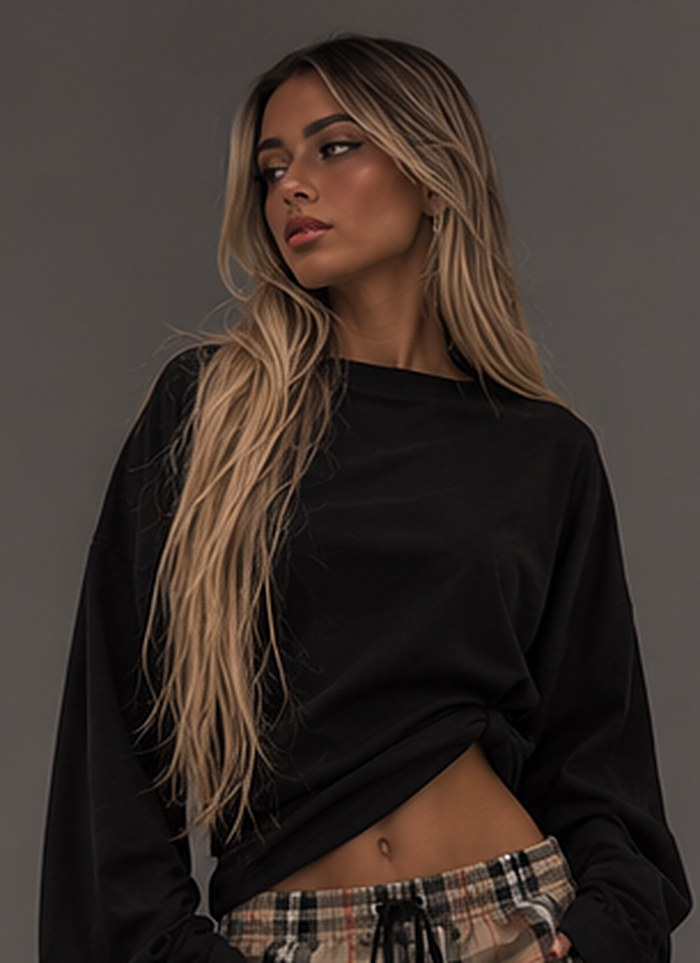
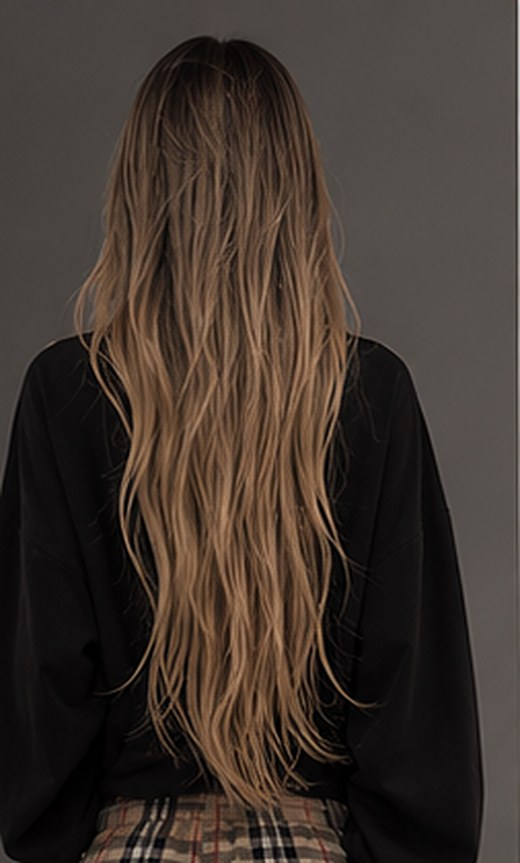
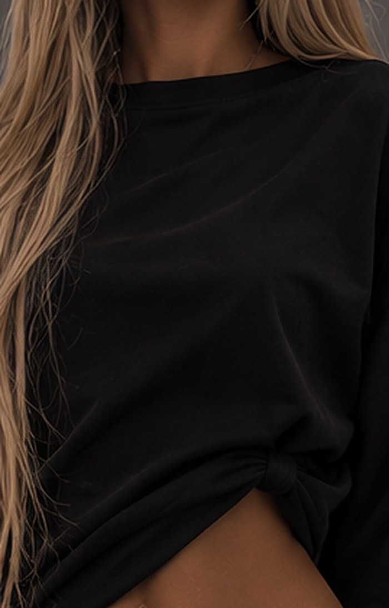
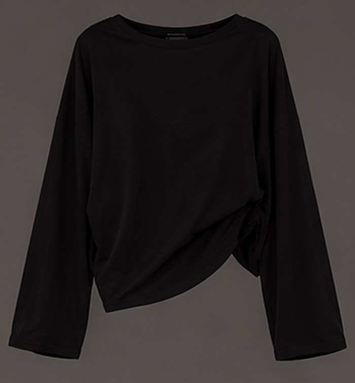

| Réf. | Article | Matière principale | Coloris | Tailles |
|---|---|---|---|---|
| WV-PT-002 | Big Plaid Pant — pantalon oversize à enfiler, taille élastique + cordon, bas à coulisse | Toile polyester-nylon légère imprimée carreau WAVEY, toucher pêche | Olive check (+ option Bleu check) | XS–XL |
| WV-TS-002 | Flow Long Sleeve — t-shirt manches longues oversize, épaules tombantes | Jersey lourd fluide coton / modal | Noir | XS–XL |

| Coutures | Assemblage piqué + surjet 4 fils, coutures de côté et entrejambe rabattues. Surpiqûres 0,6 cm, 3,5 points/cm, fil polyester assorti au fond olive. |
|---|---|
| Raccord carreaux / Check matching | Obligatoire : raccord horizontal aux coutures de côté, entrejambe et milieu dos ; carreau centré sur la couture de devant. Placer la bande écru 14 mm à 2 cm sous la ceinture. |
| Ceinture | Ceinture rapportée, élastique tissé 35 mm fixé par 2 rangs de piqûre. Œillets posés sur entoilage avant fermeture. |
| Bas | Ourlet coulisse 2,5 cm, sortie du cordon par boutonnière côté extérieur, stoppeur à ressort noir mat. |
| Position | Largeur | Couleur | Rôle |
|---|---|---|---|
| 0 – 48 | 48 | Olive foncé #2F321D (60 % sur fond) | Bande large A |
| 35 – 37,5 | 2,5 | Bleu électrique #1F4DFF | Filet signature |
| 56 – 70 | 14 | Écru #E8DFCD | Bande claire |
| 75 – 76,5 | 1,5 | Écru #E8DFCD | Filet fin |
| 80 – 116 | 36 | Olive foncé #2F321D (60 %) | Bande large B |
| 120 – 122,5 | 2,5 | Bleu électrique #1F4DFF | Filet signature |
| 136 – 150 | 14 | Écru #E8DFCD | Bande claire |
| Fond | — | Olive #5C6040 | Couleur de base |
Valeurs écran indicatives : merci de proposer les références Pantone TCX les plus proches et d'envoyer des lab dips.
| Option A (recommandée) | Toile légère 100 % polyester (ou 70/30 poly/nylon), armure sergé fin, imprimée carreau WAVEY, finition pêchée (peach skin), légèrement froissée — 95–120 g/m², laize ≥ 145 cm. Rendu « parachute » des photos. |
|---|---|
| Option B (premium) | Sergé 100 % coton tissé teint en fil, brossé une face, 170–200 g/m². Plus chaud, plus cher, meilleur tombé. |
| Tests | Solidité couleur lavage ≥ 4, frottement ≥ 3-4, retrait ≤ 3 %, boulochage ≥ 3-4. |
| Coloris option | Bleu check : fond #1F4DFF, bandes #0B1A6E, écru #E8DFCD, filet jaune #F2C230 (même raccord). |
| Demandé | Strike-off impression A4 + 1 m de métrage + lab dips avant prototype. |

| Point de mesure / POM | XS | S | M | L | XL | Tol ± |
|---|---|---|---|---|---|---|
| A. ½ taille relâchée / ½ waist relaxed | 32 | 34 | 36 | 38 | 40 | 1 |
| B. ½ taille étirée / ½ waist extended | 48 | 50 | 52 | 54 | 56 | 1 |
| C. ½ hanches (18 cm sous ceinture) / ½ hip | 56 | 58 | 60 | 62 | 64 | 1 |
| D. Montant devant (ceinture incl.) / Front rise | 31 | 32 | 33 | 34 | 35 | 0,5 |
| E. Montant dos / Back rise | 39 | 40 | 41 | 42 | 43 | 0,5 |
| F. ½ cuisse (2 cm sous entrejambe) / ½ thigh | 35 | 36 | 37 | 38 | 39 | 1 |
| G. ½ genou (36 cm sous entrejambe) / ½ knee | 31 | 32 | 33 | 34 | 35 | 1 |
| H. ½ bas ouvert / ½ leg opening (cord open) | 29 | 30 | 31 | 32 | 33 | 1 |
| I. Entrejambe / Inseam | 82 | 83 | 84 | 85 | 86 | 1 |
| J. Longueur côté / Outseam | 113 | 115 | 117 | 119 | 121 | 1 |
| K. Hauteur ceinture / Waistband height | 4 | 0,2 | ||||
| L. Ouverture poche / Pocket opening | 17 | 0,5 | ||||
Longueur volontairement supérieure de 8–10 cm à une coupe standard pour l'effet empilé sur la chaussure.
| Élément | Spécification | Qté |
|---|---|---|
| Tissu principal | Carreau WAVEY olive, voir p.3 | 1,9 m |
| Sacs de poche | Doublure polyester 70 g/m² noire | 0,3 m |
| Élastique taille | Tissé 35 mm, noir, bonne reprise | 1 |
| Cordon taille | Rond tressé Ø 5 mm, noir, 140 cm, bouts noués | 1 |
| Œillets | Métal Ø 8 mm, finition noir mat | 2 |
| Cordon bas | Élastique rond Ø 3 mm, noir, 2 × 75 cm | 2 |
| Stoppeurs | Ressort, plastique noir mat, logo W gravé (option) | 2 |
| Ruban logo | Tissé écru, texte « WAVEY » olive, 15 mm | 12 cm |
| Étiquette marque | Tissée 5 × 2 cm, fond écru, logo WAVEY™ kaki | 1 |
| Étiquette entretien | Satin imprimé, couture côté gauche | 1 |
| Fil | Polyester 120, olive assorti | — |




| Matière | Jersey simple lourd et fluide : 50 % coton peigné / 50 % modal (ou 95 % viscose / 5 % élasthanne, plus fluide), 220–240 g/m², aspect mat, toucher doux, tombé souple. |
|---|---|
| Couleur | Noir profond #111111, teint pièce, pré-lavé enzymatique (pas de retrait après achat). |
| Bord-côte | 1×1 même composition + 5 % élasthanne, noir assorti. |
| Tests | Retrait ≤ 3 % (longueur et largeur), torsion ≤ 4 %, solidité couleur lavage ≥ 4, boulochage ≥ 3-4. |
| Point de mesure / POM | XS | S | M | L | XL | Tol ± |
|---|---|---|---|---|---|---|
| A. Longueur totale (haut d'épaule) / Body length HPS | 58 | 60 | 62 | 64 | 66 | 1 |
| B. ½ poitrine (2 cm sous emmanchure) / ½ chest | 60 | 62 | 64 | 66 | 68 | 1 |
| C. ½ bas / ½ hem | 58 | 60 | 62 | 64 | 66 | 1 |
| D. Carrure (couture à couture) / Shoulder width | 62 | 64 | 66 | 68 | 70 | 1 |
| E. Longueur manche (depuis couture) / Sleeve length | 60 | 62 | 64 | 65 | 66 | 1 |
| F. Emmanchure droite / Armhole straight | 26 | 27 | 28 | 29 | 30 | 0,5 |
| G. ½ biceps / ½ bicep | 23 | 24 | 25 | 26 | 27 | 0,5 |
| H. ½ poignet / ½ cuff opening | 10 | 10,5 | 11 | 11,5 | 12 | 0,5 |
| I. Largeur encolure / Neck width | 21 | 21,5 | 22 | 22,5 | 23 | 0,5 |
| J. Profondeur encolure devant / Front neck drop | 9 | 0,5 | ||||
| K. Hauteur bord-côte col / Neck rib | 2 | 0,2 | ||||
| Élément | Spécification | Qté |
|---|---|---|
| Jersey principal | Coton/modal 230 g/m² noir, voir p.5 | 1,25 m |
| Bord-côte col | 1×1 noir, 2 cm fini | 0,1 m |
| Ruban propreté dos | Tissé écru « WAVEY » olive, 10 mm | 20 cm |
| Étiquette marque | Tissée 5 × 2 cm, fond écru, logo WAVEY™ kaki, milieu dos | 1 |
| Étiquette entretien | Satin imprimé, couture côté gauche | 1 |
| Marquage (option) | Petit W bleu électrique brodé ton sur ton poignet gauche, 2 cm | 1 |
| Fil | Polyester core-spun noir | — |